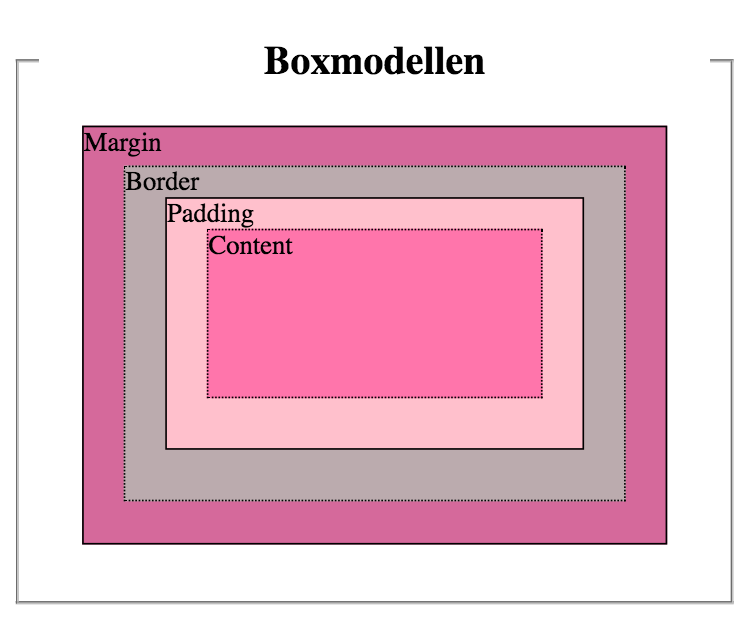
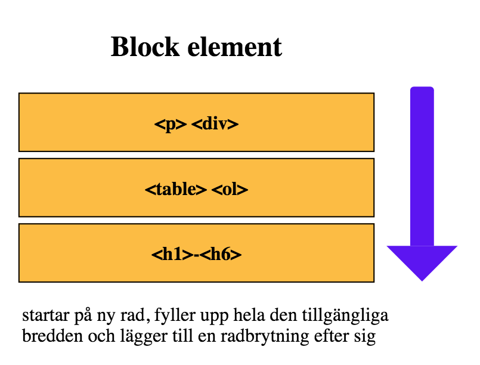
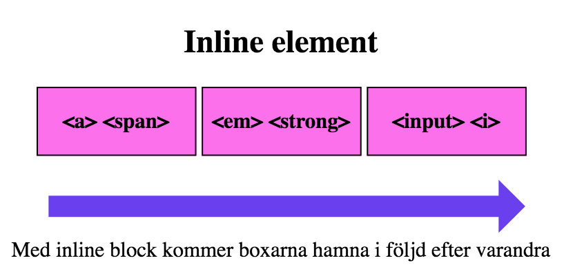

Boxmodellen
Användningsområde
Boxmodellen består av 4 olika delar vilket är margin, border, padding och content.
- Margin:Skapar tomrum mellan olika box-element. Det är yttermarginal.
Anges med hjälp av egenskaperna
- margin-top
- margin-bottom
- margin-left
- margin-right
- Border:Skapar en kantlinjen runt content och padding.
Border egenskapen innehåller border-style, border-width och border-color.
- Padding:Skapar tomrum runt omkring content. Det skapar en luftigare layout.
- padding-top
- padding-bottom
- padding-left
- padding-right
- Content: Det är innehåll som ligger inuti box. För att kunna ange höjd och bredd för
boxen använder man egenskaperna width och height.
- width: att ange bredd
- height: att ange höjd

Block-element och Inline-element
Block-element: bryter layout flödet
Till exempel, <p> <div> <table> <h1>-<h6>
- Ingen radbrytning
- Man kan ange margin och padding för top, bottom, right och left.
- Man kan ange width och height.

Inline-element: bryter inte layout flödet
Till exempel, <em> <span> <a> <strong> <img>
- Ingen radbrytning.
- Element ligger inuti andra element.
- Man kan ange margin och padding för right och left. (OBS! inga top och bottom)
- Man kan inte ange width och height. (OBS! <img> är replaced inline element så man kan ange
bredd
och höjd)

Display
Egenskap display anger vilken layout-typ ett element skall ritas ut med.
- block: skapa block element box
- inline: skapa inline element box
- inline-block: Elementet är formaterat som ett inline-element, men man kan använda
höjd och bredd
som block element box.
Box-sizing
- border-box: Inkluderar padding och border i elementets bredd och höjd.
- content-box: Separerar padding och border i elements bredd och höjd.
(Default case)